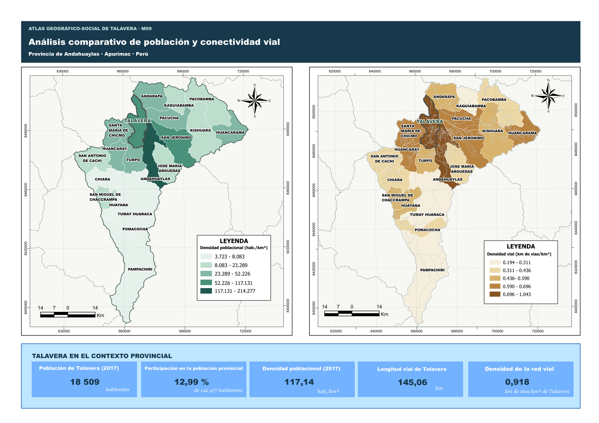

ATLAS GEOGRÁFICO-SOCIAL · M11
Recursos turísticos y patrimonio territorial
Distrito de Talavera · Andahuaylas · Apurímac
Haz clic en puntos y áreas para consultar su información
Lectura territorial
Sobre este mapa
Lectura e interpretaciónFicha del tema
Aspectos destacados
Entidad seleccionada
Haz clic en una entidad o recurso turístico para consultar sus atributos.
Referencia cartográfica

Proyecto académico · Piero Morales · UNMSM · 2026V12 · Atlas cartográfico interactivo